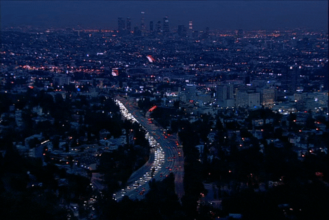

Our project is an examination into the mental health crisis that has been rampant in Los Angeles County in recent years.
We intend to use geographical data and visualizations to understand where mental health services are most in demand, what
individuals most need these services and the factors that contribute to difficulties accessing these resources. Moreover,
this analysis is intended to highlight the shortcomings of the current mental health programs that exist in Los Angeles
County that are not necessarily obtainable for all individuals. This project is for all individuals whose mental health
issues have had a negative impact in their livelihood, for those who know someone whose mental health has affected their
quality of life and for those who have the power to expand mental health resources. Our project is about awareness.
Our Mission

people currently suffer from some mental illness in the U.S.*
*source: NIMH
Why it matters?
Explore Map
Timeline
Resources